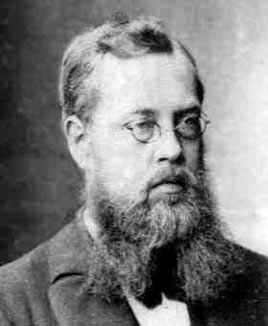
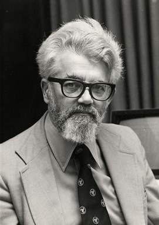
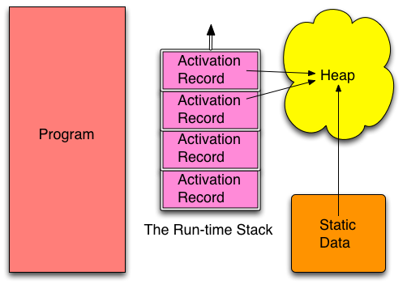
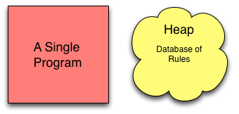
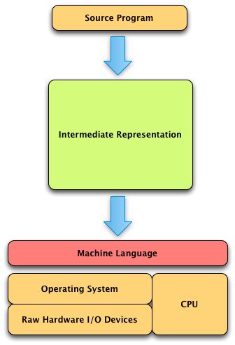
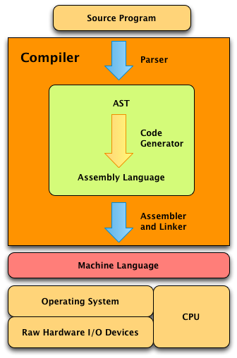
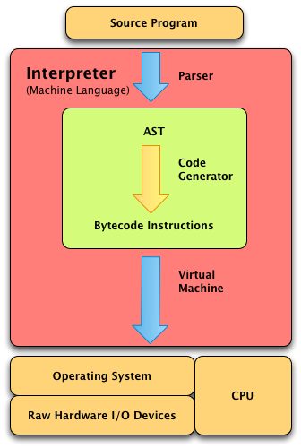
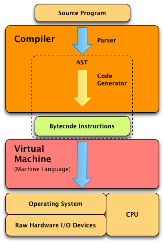

1. Introduction¶
1.1. Historical Perspective¶

Fig 1.1 Sophus Lie
Fig 1.2 John Backus

Fig 1.3 John McCarthy
Practice 1.1
Find the answers to the following questions.
- What are the origins of the three major computational models that early computer scientists developed?
- Who was Alan Turing and Alonzo Church and what were some of their their contributions to Computer Science?
- What idea did both John von Neumann and Alan Turing contribute to?
- What notation did John Backus develop and what was one of its first uses?
- What year did Alan Turing first propose the Turing machine and why?
- What year did Alonzo Church first propose the
-calculus and why?
- Why are Eckert and Mauchly famous?
- Why are the history of Mathematics and Computer Science so closely tied together?
1.2. Models of Computation¶
1.2.1. The Imperative Model¶

Fig 1.4 Imperative Model
Practice 1.2
Find the answers to the following questions.
- What are the three divisions of data memory called?
- When does an item in the heap get created?
- What goes in an activation record?
- When is an activation record created?
- When is an activation record deleted?
- What is the primary goal of imperative, object-oriented programming?
1.2.2. The Functional Model¶
Practice 1.3
Answer the following questions.
- What are some examples of functional languages?
- What is the primary difference between the functional and imperative models?
- Immutable data is data that cannot be changed once created. The presence of immutable data simplifies the conceptual model of programming. Does the imperative or functional model emphasize immutable data?
1.2.3. The Logic Model¶

Fig 1.5 Logic Model of Computation
Practice 1.4
Answer these questions on what you just read.
- How many programs can you write in a logic programming language like Prolog?
- What does the programmer do when writing in Prolog?
1.3. The Origins of a Few Programming Languages¶
1.3.1. A Brief History of C and C++¶
Fig 1.6 Bjarne Stroustrup
1.3.2. A Brief History of Python¶
Fig 1.7 Guido van Rossum
1.3.3. A Brief History of Java¶
1.3.4. A Brief History of Standard ML¶
Fig 1.8 Robin Milner
1.3.5. A Brief History of Prolog¶
Fig 1.9 Alain Colmerauer
Fig 1.10 Robert Kowalski
Practice 1.5
Answer the following questions.
- Who invented C++? C? Standard ML? Prolog? Python? Java?
- What do Standard ML and Prolog’s histories have in common?
- What do Prolog and Python have in common?
- What language or languages is Standard ML based on?
1.4. Language Implementation¶

Fig 1.11 Language Implementation
1.4.1. Compilation¶

Fig 1.12 The Compilation Process
1.4.2. Interpretation¶

Fig 1.13 The Interpretation Process
1.4.3. Virtual Machines¶

Fig 1.14 Virtual Machine Implementation
1.5. Types and Type Checking¶
1.6. Chapter Summary¶
1.7. Review Questions¶
- What are the three ways of thinking about programming, often called programming paradigms?
- Name at least one language for each of the three methods of programming described in the previous question?
- Name one person who had a great deal to do with the development of the imperative programming model. Name another who contributed to the functional model. Finally, name a person who was responsible for the development of the logic model of programming?
- What are the primary characteristics of each of the imperative, functional, and logic models?
- Who are recognized as the founders of each of the languages this text covers: Java, C++, Python, Standard ML, and Prolog?
- Name a language, other than Python, C++, or Java, that is imperative object-oriented in nature.
- Name a language besides Standard ML, that is a functional programming language.
- What other logic programming languages are there other than Prolog? You might have to get creative on this one.
- Why is compiling a program preferred over interpreting a program?
- Why is interpreting a program preferred over compiling a program?
- What bene ts do virtual machine languages have over interpreted languages?
- What is a bytecode program? Name two languages that use bytecode in their implementation.
- Why are types important in a programming language?
- What does it mean for a programming language to be dynamically typed?
- What does it mean for a programming language to be statically typed?
1.8. Solutions to Practice Problems¶
These are solutions to the practice problems. You should only consult these answers after you have tried each of them for yourself first. Practice problems are meant to help reinforce the material you have just read so make use of them.
1.8.1. Solution to Practice Problem 1.1¶
- The origins of the three models are the Turing Machine, the
- Alan Turing as a PhD student of Alonzo Church. Alan Turing developed the Turing Machine and Alonzo Church developed the
- Both von Neumann and Turing contributed to the idea of a stored-program computer.
- Backus developed BNF notation which was used in the development of Algol 60.
- 1936 was a big year for Computer Science.
- So was 1946. That was the year ENIAC was unveiled. Eckert and Mauchly designed and built ENIAC.
- The problems in Mathematics were growing complex enough that many mathematicians were developing models and languages for expressing their algorithms. This was one of the driving factors in the development of computers and Computer Science as a discipline.
1.8.2. Solution to Practice Problem 1.2¶
- The run-time stack, global memory, and the heap are the three divisions of data memory.
- Data on the heap is created at run-time.
- An activation record holds information like local variables, the program counter, the stack pointer, and other state information necessary for a function invocation.
- An activation record is created each time a function is called.
- An activation record is deleted when a function returns.
- The primary goal of imperative, object-oriented programming is to update memory by updating variables and/or objects as the program executes. The primary operation is memory updates.
1.8.3. Solution to Practice Problem 1.3¶
- Functional languages include Standard ML, Lisp, Haskell, and Scheme.
- In the imperative model the primary operation revolves around updating memory (the assignment statement). In the functional model the primary operation is function application.
- The functional model emphasizes immutable data. However, some imperative languages have some immutable data as well. For instance, Java strings are immutable.
1.8.4. Solution to Practice Problem 1.4¶
- You never write a program in Prolog. You write a database of rules in Prolog that tell the single Prolog program (depth first search) how to proceed.
- The programmer provides a database of facts and predicates that tell Prolog about a problem. In Prolog the programmer describes the problem instead of programming the solution.
1.8.5. Solution to Practice Problem 1.5¶
- C++ was invented by Bjourne Stroustrup. C was created by Dennis Ritchie. Standard ML was primarily designed by Robin Milner. Prolog was designed by Alain Colmerauer and Philippe Roussel with the assistance of Robert Kowalski. Python was created by Guido van Rossum. Java was the work of the Green team and James Gosling.
- Standard ML and Prolog were both designed as languages for automated theorem proving first. Then they became general purpose programming languages later.
- Both Python and Prolog run on virtual machine implementations. Python’s virtual machine is internal to the interpreter. Prolog’s virtual machine is called WAM (Warren Abstract Machine).
- Standard ML is influenced by Lisp, Pascal, and Algol.